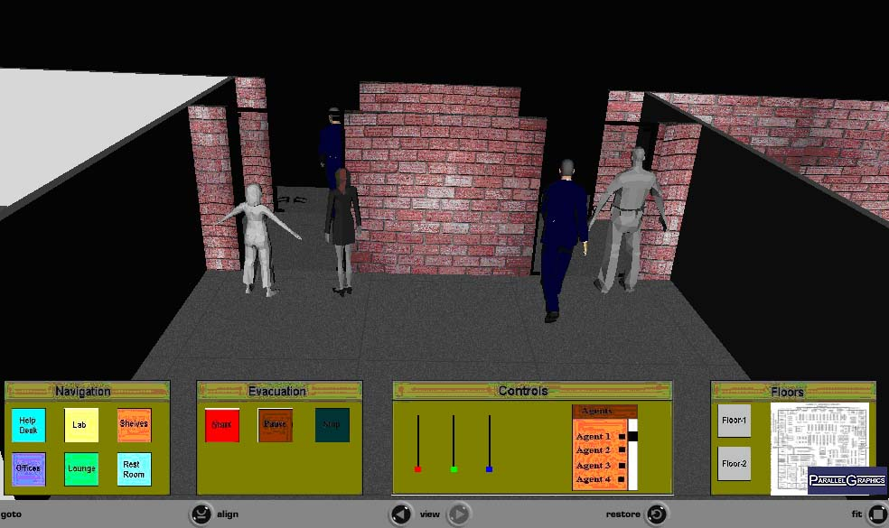
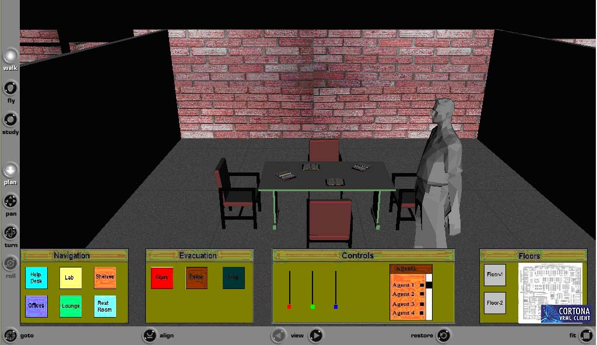
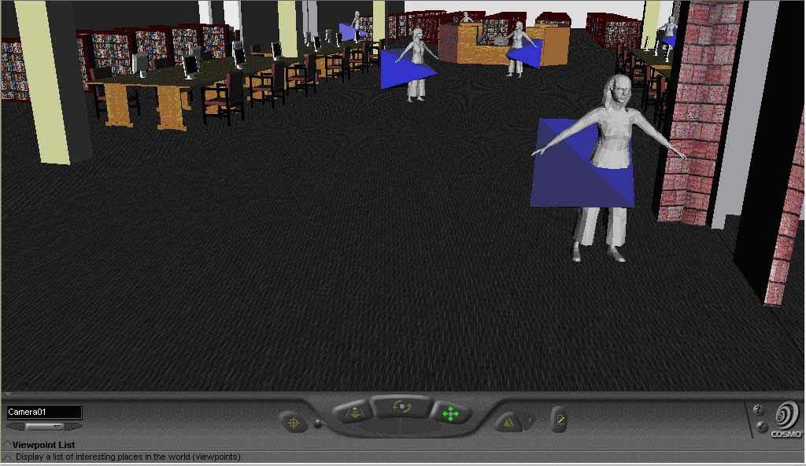
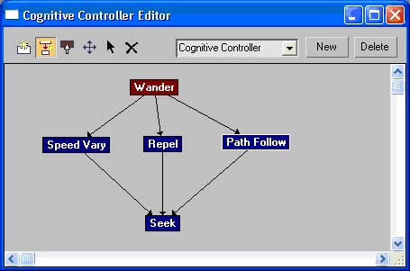
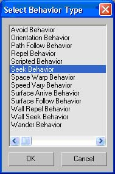

___________________________________________________________________________________________________________________
This project presents the simulation and modeling of a Bowie State University library building in a virtual environment. The virtual library building is modeled on a real time library building on campus at Bowie State University. Depending on the distance between the agent and the target, different behaviors will gets assigned to the respective agent.
This project presents evacuation simulation of a school building using virtual reality. It is well known that crowd stampede is one of the most disastrous forms of collective behavior caused due to panic. It leads to fatalities as people get trampled and crushed as they fall. The application presents a school building environment with several classrooms with students, teachers, chairs, televisions, walls, doors and tables.This simulation aims to aid the visitors in navigation within the building.
|  |  |
| View of class room in the buidling during evacuation | View of an avatar visualizing the video for exit routes. |
Quick evacuation of occupants in a building is very critical to save lives. Training of occupants in a real-time environment is very complex because it is both expensive and dangerous. It is well known that crowd stampede is one of the most disastrous forms of collective behavior that is caused due to panic. It leads to fatalities as people get trampled and crushed as they fall. The evacuation simulation in Virtual Reality demonstrates how people behave in emergency scenarios which they may not be able to experience in a real world.
Many research and social interaction aspects of crowd behavior are beyond the reach of available tools. The VR environment is able to adapt for specific design situations and provide insight to current perspective as well as what-if questions. Our hypothesis is that mutual concern, helping, and co-ordination will more likely occur when crowd members share a common identity. The selfish behavior associated with 'mass panic' may occur in evacuation if there is no shared identity. Our hypothesis is that the visualization studies support the conclusion that, where there is a strong sense of collective identity, there will be mutual concern and helping.
|
 |
| View of library Shelves and Avatars | Agents moving towards the goal in library |
During emergency evacuation, behavior of people becomes uncertain. Each agent’s emotions such as stress, anger, and panic are defined as low, medium, and high. Rules are intuitively designed based on each agent’s location and speed.
|  |  |
| Simulating Behaviors for various agents using cognitive controller in MATLAB | Behavior List for avatars in 3ds Max |
Embedded video with a virtual environment can be used to show multiple views for an evacuation visualization task.Embedded video visualizations integrate video and 3D model data to help users understand complex situations. Fig. 5show an agent visualizing the embedded video for exit routes inside the building during evacuation. When evacuating the building, the user relies more on the embedded videos. We plan to further explore several designs from the video processing dimension and the navigation dimension as well in our future work.

Fig.4. View of an avatar visualizing the embedded video during evacuation.
Publications
Copyright © Sharad Sharma., All Rights Reserved